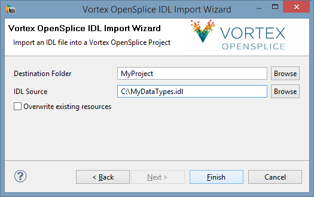
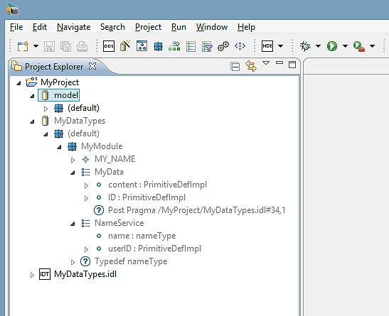
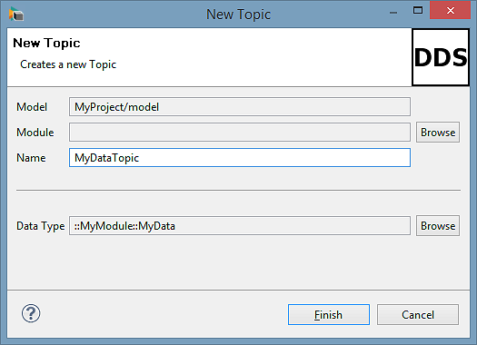
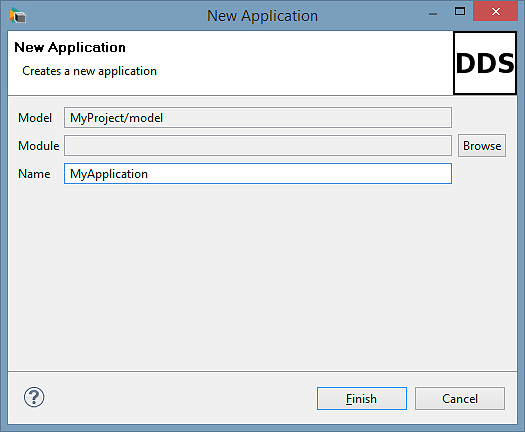
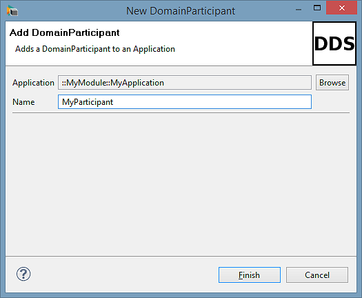
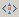
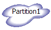

5. Modeling¶
This section describes in detail how to use the tools in Vortex OpenSplice Modeler for modeling and assembling resources (such as DDS entities).
The Vortex OpenSplice Modeler provides separate Information and Application modeling. This section describes the use of these two modeling paradigms in a project.
5.1. Information Modeling¶
The following sections describe how to use and add components to a project’s information model. Information modeling includes the modeling of Types and Topics. The following sections describe how to add and use Types and Topics in a project
5.1.1. Types and their IDL Specification¶
A data type, which is part of the Information Model [1] and will be distributed by the application, can be regarded as a table in a database where the database consists of a number of named columns, and each column is assigned its own primitive type. Just like a database table, the type has a set of keys, which is a subset of the set of columns.
Data types are specified using the Interface Definition Language (IDL). Using the Interface Definition Language to specify the data types ensures that they will be platform and (implementation or native) language independent.
A data type’s IDL specification is subsequently mapped (in other words, converted) to a data type of the target programming language that the application will be implemented in. For example, if the programming language that the application will be implemented in is Java, then the IDL specification for the data type would be mapped to attributes in a Java class. However, if the implementation language is C++, then the data type would be mapped to members in a C struct.
 The same data type can communicate between applications
implemented in different languages without difficulty.
The same data type can communicate between applications
implemented in different languages without difficulty.
A data type’s IDL specification is imported from a file containing the specification. The IDL specification is imported into a project by following these steps:
Step 1
Choose File > Import from the Eclipse menu. This displays the Import dialog.
Expand the Vortex OpenSplice folder (displayed in the dialog), select Vortex OpenSplice IDL Import Wizard, then click the Next button. This will display the Vortex OpenSplice IDL Import Wizard (see the illustration below).
Vortex OpenSplice IDL Import Wizard
{kind=link}
Step 2
Enter the folder which the IDL specification is to be imported into in the Destination Folder text box by using the adjacent Browse button and navigating the Project Explorer’s projects (recommended method) or by writing the folder pathname in the text box.
Step 3
Enter the full pathname of the file containing IDL specification into the IDL Source text box using the adjacent Browse button to navigate through the file system to locate the required IDL specification file.
Step 4
Click the Finish button when all entries are completed in order to import the IDL specification into the project.
The IDL file being imported should appear in the Project Explorer in the destination folder.
When the import is complete, a new model will be generated from the specification defined in the IDL file. The model will have the same name as the IDL file.
OR
Create an empty IDL file in a Vortex OpenSplice project, open it in the Eclipse text editor, then write the IDL specification. A model with the same name as the IDL file will be automatically generated. The model will contain the data types defined in the IDL specification. Any changes to the original IDL file will be reflected in the generated model.
 Models generated from an IDL file are ‘read only’ and they appear
in the Project Explorer with grey label text. It is not possible
to add additional items to these models.
Models generated from an IDL file are ‘read only’ and they appear
in the Project Explorer with grey label text. It is not possible
to add additional items to these models.
Example Imported Data Type Definitions
{kind=link}
5.1.2. TopicDescription¶
TopicDescription is the base class for Topic, ContentFilteredTopic and MultiTopic (in accordance with the DDS Specification).
TopicDescription represents the situation where both publications and subscriptions are associated with a single data-type.

- MultiTopics are not supported by this release.
5.1.3. Topics¶
A Topic binds a name to an associated data type. Further, multiple Topics can be created for one specific type.
A Topic can be added to a project or specific application (noting that Topics are associated with data types) by:
Step 1
In the Project Explorer, right-clicking on the Module containing the application the Topic is to be added to, choosing New Topic from the pop-up dialog.
OR
Choosing File > New > Topic from the Eclipse Menu Bar (not recommended, since an additional step is required).
OR
In the Diagram Editor (if the application is in an open diagram) by choosing the Topic tool from the Diagram Editor’s tool palette, then clicking in a free area of the canvas.
Either of these last two methods will display the New Topic dialog (see New Topic dialog).
Step 2
In the New Topic dialog:
- Select the Module that the Topic is to be added to into the Module field (using the adjacent Browse button). This will automatically set the Model.
- Enter the Topic’s name into the Name text box.
- Select the data type, using the Browse button adjacent to the Data Type text box to find and select the data type the Topic is to be associated with; the data type should appear in the Data Type text box similar to the example in New Topic dialog.
Step 3
Click Finish when complete. The new Topic should appear in the Project Explorer under the selected Module (and, if the Diagram Editor’s palette tool was used, in the diagram as well).
 Topics are connected to DataWriters and DataReaders with the
Topic Connection Tool: the instructions are given in
Using the Connection Tool for Topics.
Topics are connected to DataWriters and DataReaders with the
Topic Connection Tool: the instructions are given in
Using the Connection Tool for Topics.
New Topic dialog
{kind=link}
5.1.4. ContentFilteredTopic¶
The ContentFilteredTopic DDS entity, derived from the TopicDescription base class, can be used to do content-based subscriptions.
A ContentFilteredTopic can be added to a Module by:
Step 1
Right-click on the Module and choose New ContentFilteredTopic from the pop-up menu.
OR
In the Diagram Editor, select Content Filtered Topic from the Diagram Editor’s palette and click on the diagram.
Step 2
When using the New ContentFilteredTopic dialog:
- In the Module field, select the Module the ContentFilteredTopic is to be added to using the adjacent Browse button. This will automatically set the Model field.
- Use the Browse button to browse for the Topic that the ContentFilteredTopic will be based on.
- Enter a filter expression for the ContentFilteredTopic (refer to the OMG’s DDS Specification for the syntax)
ContentFilteredTopics are connected to DataReaders using the Topic Connection Tool (refer to Using the Connection Tool for Topics).
5.2. Application Modeling¶
The following sections describe how to use and add components to a project’s application model. Application modeling includes the modeling of DomainParticipants, Publishers, Subscribers, DataWriters, DataReaders, Listeners, WaitSets and Conditions.
5.2.1. Applications¶
A Vortex OpenSplice Modeler Application represents an executable application. An application contains DDS entities such as DomainParticipants, Publishers, Subscribers, DataReaders and DataWriters.
An application can be added to the project by following these steps:
Step 1
Right-click on a module in the Project Explorer, then choose New Application from the pop-up dialog
OR
In the Diagram Editor, choose the Application tool from the tool palette, then click in the canvas.
Either of these methods will display the New Application dialog.
Step 2
Enter the application’s name into the Name text box in the New Application dialog.
Step 3
Select the Module that the application is to be added to by clicking the Browse button adjacent to the Module text box, then navigating the project.
Step 4
Click the Finish button. The new application component should appear in the Project Explorer under the selected module. The application will also appear in the diagram if the Diagram Editor’s tool palette was used.
New Application dialog
{kind=link}
5.2.2. DomainParticipants¶
DomainParticipants can be added to an application by:
Step 1
In the Project Explorer, right-click on the application the DomanParticipant is to be added to, then choose New Domain Participant from the pop-up dialog.
OR
If the application is in a diagram, then open it in the Diagram Editor, select the DomanParticipant tool from the tool palette, then click inside the target application’s symbol appearing on the canvas.
Either of these methods will display the New Domain Participant dialog.
New DomainParticipant dialog
{kind=link}
Step 2
Enter the DomainParticipant’s name into the Name text box in the New Domain Participant dialog.
Step 3
The desired target Application should appear in the Application text box: if not, then click the Browse button adjacent to the Application text box, and navigate the project to locate the parent Application.
Step 4
Click the Finish button. The new DomainParticipant should appear in the Project Explorer under the selected application. The DomainParticipant will also appear in the diagram, inside the application, if the Diagram Editor’s tool palette was used.
5.2.3. Publishers and Subscribers¶
Publishers and subscribers can be added to DomainParticipants using the Diagram Editor’s palette as well as the Project Explorer. When using the palette, drag the palette’s icon for the entity instance to the DomainParticipant.
5.2.4. DataWriters and DataReaders¶
DataWriters and DataReaders are contained inside publishers and subscribers, respectively. They are added using Diagram Editor’s palette: drag the palette’s icon for the entity instance to the appropriate publisher or subscriber.
Individual DataWriter and DataReader instances can be associated with only one particular Topic. The association is created using Topic Connectors.
5.2.5. Partition¶
A DDS Partition entity is associated with Publishers and Subscribers: one or more Publishers and Subscribers can be connected to a single Partition.
A Partition is added to a model using the Diagram Editor and a Model’s diagram, noting that a diagram should already exist which contains the Publishers and/or Subscribers the Partition is to be associated with.
A Partition can also be added by clicking the toolbar’s partition icon  and the New Partition context menu item for Modules. Either of these methods will launch a ‘new partition’ wizard.
{kind=link}
Step 1
Open a Model’s Diagram.
Step 2
Select the Partition tool from the Diagram Editor’s palette.
Step 3
Click in a free area of the diagram’s canvas: a new Partition will appear in the diagram and in the Project Explorer under the selected Model and Module.
Partition Symbol
{kind=link}
Partitions are associated with (or connected to) Publishers and Subscribers using the Partition Connection Tool; instructions are in Using the Connection Tool for Partitions.
5.2.6. Listeners¶
The Vortex OpenSplice Modeler supports the modeling of listeners. Listeners enable the application to asynchronously become aware of DCPS communication status changes. Using listeners is an alternative method to using conditions and WaitSets. A detailed description of each communication status is given in the OMG’s Data Distribution Service for Real-time Systems Specification, Version 1.2, formal/07-01-01.
The communication statuses, whose changes can be communicated to the application, depend on the specific Entity being communicated with. A listener can be attached to any DDS Entity.
Modeled listeners are associated with entities within an application or a Topic. When modeling listeners, users can choose which communication statuses that their application is interested in by selecting the Listener, opening the Properties view and modifying the Status Mask entries.
The user can also define the Listener type; this affects the values appearing in the Status Mask field.
The Listener Type property defines values for each type of DDS Entity that a listener can be connected to (Topic, DomainParticipant, Publisher, Subscriber, DataReader or DataWriter). These values are defined as:
Derived
If and only if the Listener is connected to an Entity of this type, will the Status Mask assume the Status Mask properties of this type of entity.
For example, if the Listener is connected to a DataReader and the Listener Type property value for DataReader is set to Derived, then the Status Mask for the Listener will include all Status values for a DataReader and we will be able to model an interest in those statuses.
Derived is the default value since it only provides Status Mask properties for any entities that the listener is actually connected to.
Enabled
This value ensures that the Status Mask properties for this type of entity always appear in the Status Mask for the Listener, regardless of whether the Listener is connected to an Entity of that type.
This is useful, for example, if it is desirable to express an interest in Listening to an Entity that has not been modeled using the tool.
Disabled
This value ensures that the Listener can not listen to Entities of that type. If an Entity is Disabled, then the user will not be able to connect the Listener to an Entity of that type using the Listener Connection Tool. Similarly, if a connection already exists to an Entity of that type, then the user will receive an Error in the Problems view.
A Listener can be created in the tool by
EITHER
Step 1
Opening a Model in the Diagram Editor.Step 2
Choosing the Listener tool from the Diagram Editor’s Palette.Step 3
Clicking on the Application which the Listener should be associated with (in the Diagram Editor).
OR
Step 1
Right-click on an Application in the Project Explorer.Step 2
Select New Listener.
Listeners are associated with entities by using the Listener Connection Tool. (See Using the Connection Tool for Listeners for details.)
5.2.7. WaitSets¶
WaitSets are contained within an Application and are associated with certain Condition objects. WaitSets enable applications to be made synchronously aware of DCPS communication status changes and are an alternative method to using Listeners (see Listeners).
A WaitSet is a wait-based scheme. It is used in conjunction with Condition objects (see Conditions) to block the current thread of the application until a specified condition is satisfied or until the timeout expires. This is the alternative to the listener-based scheme which uses notification for awareness of status changes.
 A WaitSet can be associated with one or more Condition objects.
A WaitSet can be associated with one or more Condition objects.
5.2.7.1. Modeling WaitSets¶
A WaitSet can be created using either the Diagram Editor or the Project Explorer.
Using the Diagram Editor
Step 1
Open a model in the Diagram Editor.Step 2
Select the WaitSet tool from the Diagram Editor’s Tool palette.Step 3
Click on the Application symbol which the WaitSet should be associated with in the Diagram Editor. This will add a WaitSet symbol to the diagram.
Using the Project Explorer
Step 1
Right-click on an Application in the Project Explorer. A pop-up dialog will appear.Step 2
Select New WaitSet in the pop-up dialog. Provide the requested details.
Condition objects now need to be created and associated with the WaitSet.
5.2.8. Conditions¶
WaitSets use Condition objects to determine which status changes an application should be notified of.
There are different types of Condition object (referred to herein simply as Conditions for brevity). The following Condition types are specified in the OMG’s DDS Specification and are supported by the Vortex OpenSplice Modeler.
StatusCondition
A StatusCondition defines a specific condition which is associated with each Entity.
The StatusCondition’s status mask determines which status changes the application is notified of (for its associated Entity).
The StatusCondition contains properties of type boolean. These properties determine the communication statuses. The properties can be set in the Status Mask field of the Properties View. Further, when associating a StatusCondition with a Topic, the related Domain Participant for that Topic must be specified in the Properties View.
See the OMG’s DDS Specification for detailed information about communication statuses.
ReadCondition
ReadCondition objects are conditions specifically dedicated to read operations.
An application can specify the data samples it is interested in by setting a ReadCondition’s sample, view and instance states. More than one ReadCondition can be associated with a DataReader. A ReadCondition’s states can be set in the Vortex OpenSplice Modeler Properties View.
QueryCondition
QueryCondition objects are specialized ReadCondition objects. A subset of an SQL expression can be used to allow the application to filter out newly-arrived data, in addition to the notification of new arrivals.
GuardCondition
Unlike the other conditions, the GuardCondition is completely under the control of the application.
The application has the functionality to manually wake a WaitSet by attaching the GuardCondition to it and setting the trigger value of the Condition. See the OMG’s DDS Specification for detailed information.
5.2.8.1. Modeling Conditions¶
Conditions are created, in a similar way to WaitSets, by using either the Diagram Editor or the Project Explorer.
Using the Diagram Editor
Step 1
Open a model in the Diagram Editor.Step 2
Select the desired Condition tool from the Diagram Editor’s Tool paletteStep 3
Click on the Application symbol which the Condition should be associated with in the Diagram Editor. This will add the appropriate Condition symbol to the diagram.
Using the Project Explorer
Step 1
Right-click on an Application in the Project Explorer. A pop-up dialog will appear.Step 2
Choose the desired New Condition option in the pop-up dialog. Provide the requested details.
5.2.9. Connecting Components¶
The Diagram Editor has a single generic connection tool. This tool is selected by clicking it in the Diagram Editor’s Tool Palette.
The connection tool connects:
- Topics to DataWriters and DataReaders, and specifies which data that the DataWriter or DataReader will write or read, respectively
- Partitions to Publishers and Subscribers, and specifies where the data will be written to or read from, respectively
- Listeners to Domain Participants, Publishers, Subscribers, DataReaders, DataWriters and Topics
- StatusConditions to DomainParticipants, Publishers, Subscribers, DataReaders, DataWriters and Topics
- ReadConditions and QueryConditions to DataReaders
- Conditions (GuardCondition, StatusCondition, ReadCondition and QueryCondition) to WaitSets
5.2.9.1. Using the Connection Tool for Topics¶
Step 1
Select the Connection Tool from the Diagram Editor’s palette.
Step 2
Click on the topic to be connected, then click on the entity (for example, a data writer) that the topic is to be connected to.
 An entity can only be connected to one topic; an existing
connection between a topic and an entity will be removed
whenever the entity is connected to another topic.
An entity can only be connected to one topic; an existing
connection between a topic and an entity will be removed
whenever the entity is connected to another topic.
5.2.9.2. Using the Connection Tool for Partitions¶
Step 1
Select the Connection Tool from the Diagram Editor’s palette.
Step 2
Start the connection from the Partition to the publisher or subscriber.
Step 3
Click on the Partition to be connected, then click on the Publisher or Subscriber that the Partition is to be connected to.
 Publishers and Subscribers can be connected to more than one
Partition.
Publishers and Subscribers can be connected to more than one
Partition.
5.2.9.3. Using the Connection Tool for Listeners¶
Step 1
Select the Connection Tool from the Diagram Editor’s palette.
Step 2
Click on the Listener to be connected, then click on the Topic, DomainParticipant, Publisher, Subscriber, DataReader or DataWriter that the Listener is to be connected to.
 Listeners can be connected to more than one entity.
Listeners can be connected to more than one entity.
5.2.9.4. Using the Connection Tool to connect StatusConditions to an Entity¶
Step 1
Select the Connection Tool from the Diagram Editor’s palette.
Step 2
Click on the StatusCondition to be connected, then click on the Topic, DomainParticipant, Publisher, Subscriber, DataReader or DataWriter that the Listener is to be connected to.
 Only one StatusCondition can be attached to DomainParticipants,
Publishers, Subscribers, DataWriters and DataReaders.
Only one StatusCondition can be attached to DomainParticipants,
Publishers, Subscribers, DataWriters and DataReaders.
 Multiple StatusConditions may be attached to a Topic but each
StatusCondition must have a different related DomainParticipant
specified.
Multiple StatusConditions may be attached to a Topic but each
StatusCondition must have a different related DomainParticipant
specified.
5.2.9.5. Using the Connection Tool to connect ReadConditions and QueryConditions to a DataReader¶
Step 1
Select the Connection Tool from the Diagram Editor’s palette.
Step 2
Click on the ReadConditions or QueryConditions to be connected, then click on the DataReader or DataWriter that the Condition is to be connected to.
 Multiple ReadConditions and QueryConditions can be attached to
each DataReader.
Multiple ReadConditions and QueryConditions can be attached to
each DataReader.
5.2.9.6. Using the Connection Tool to connect Conditions to a WaitSet¶
Step 1
Select the Connection Tool from the Diagram Editor’s palette.
Step 2
Click on the Condition to be connected, then click on the WaitSet that the Condition is to be connected to.
Footnotes
| [1] | The Information Model is the complete set of topics in a domain, including their associated data types and QoS settings. |

Table Of Contents
- 5. Modeling
- 5.1. Information Modeling
- 5.2. Application Modeling
- 5.2.1. Applications
- 5.2.2. DomainParticipants
- 5.2.3. Publishers and Subscribers
- 5.2.4. DataWriters and DataReaders
- 5.2.5. Partition
- 5.2.6. Listeners
- 5.2.7. WaitSets
- 5.2.8. Conditions
- 5.2.9. Connecting Components
- 5.2.9.1. Using the Connection Tool for Topics
- 5.2.9.2. Using the Connection Tool for Partitions
- 5.2.9.3. Using the Connection Tool for Listeners
- 5.2.9.4. Using the Connection Tool to connect StatusConditions to an Entity
- 5.2.9.5. Using the Connection Tool to connect ReadConditions and QueryConditions to a DataReader
- 5.2.9.6. Using the Connection Tool to connect Conditions to a WaitSet